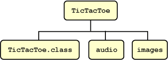

|
jar cf jar-file input-file(s)
The c and f options can appear in either order, but there must not be any space between them.
This command will generate a compressed JAR file and place it in the current directory. The command will also generate a default manifest file for the JAR archive.
You can add any of these additional options to the cf options of the basic command:
| Option | Description |
|---|---|
| v | Produces verbose output on stdout while the JAR file is being built. The verbose output tells you the name of each file as it's added to the JAR file. |
| 0 (zero) | Indicates that you don't want the JAR file to be compressed. |
| M | Indicates that the default manifest file should not be produced. |
| m | Used to include manifest information from an existing manifest file. The format for using this option is:
jar cmf existing-manifest jar-file input-file(s) Warning: The manifest must end with a new line or carriage return. The last line will not be parsed properly if it does not end with a new line or carriage return. |
| -C | To change directories during execution of the command. See below for an example. |
Let us look at an example. A simple TicTacToe applet. You can see the source code of this Applet at TicTacToe.java. This demo contains a bytecode class file, audio files, and images having this structure:

The audio and images subdirectories contain sound files and GIF images used by the applet.
You can obtain all these files from jar/examples directory when you download the entire Tutorial online. To package this demo into a single JAR file named TicTacToe.jar, you would run this command from inside the TicTacToe directory:
jar cvf TicTacToe.jar TicTacToe.class audio images
adding: TicTacToe.class (in=3825) (out=2222) (deflated 41%) adding: audio/ (in=0) (out=0) (stored 0%) adding: audio/beep.au (in=4032) (out=3572) (deflated 11%) adding: audio/ding.au (in=2566) (out=2055) (deflated 19%) adding: audio/return.au (in=6558) (out=4401) (deflated 32%) adding: audio/yahoo1.au (in=7834) (out=6985) (deflated 10%) adding: audio/yahoo2.au (in=7463) (out=4607) (deflated 38%) adding: images/ (in=0) (out=0) (stored 0%) adding: images/cross.gif (in=157) (out=160) (deflated -1%) adding: images/not.gif (in=158) (out=161) (deflated -1%)
You can see from this output that the JAR file TicTacToe.jar is compressed. The Jar tool compresses files by default. You can turn off the compression feature by using the 0 (zero) option, so that the command would look like:
jar cvf0 TicTacToe.jar TicTacToe.class audio images
You might want to avoid compression, for example, to increase the speed with which a JAR file could be loaded by a browser. Uncompressed JAR files can generally be loaded more quickly than compressed files because the need to decompress the files during loading is eliminated. However, there is a tradeoff in that download time over a network may be longer for larger, uncompressed files.
The Jar tool will accept arguments that use the wildcard * symbol. As long as there weren't any unwanted files in the TicTacToe directory, you could have used this alternative command to construct the JAR file:
jar cvf TicTacToe.jar *
Though the verbose output doesn't indicate it, the Jar tool automatically adds a manifest file to the JAR archive with path name META-INF/MANIFEST.MF. See the Working with Manifest Files: The Basics section for information about manifest files.
In the above example, the files in the archive retained their relative path names and directory structure. The Jar tool provides the -C option that you can use to create a JAR file in which the relative paths of the archived files are not preserved. It's modeled after TAR's -C option.
As an example, suppose you wanted to put audio files and gif images used by the TicTacToe demo into a JAR file, and that you wanted all the files to be on the top level, with no directory hierarchy. You could accomplish that by issuing this command from the parent directory of the images and audio directories:
jar cf ImageAudio.jar -C images . -C audio .
META-INF/MANIFEST.MF cross.gif not.gif beep.au ding.au return.au yahoo1.au yahoo2.au
jar cf ImageAudio.jar images audio
META-INF/MANIFEST.MF images/cross.gif images/not.gif audio/beep.au audio/ding.au audio/return.au audio/yahoo1.au audio/yahoo2.au
|